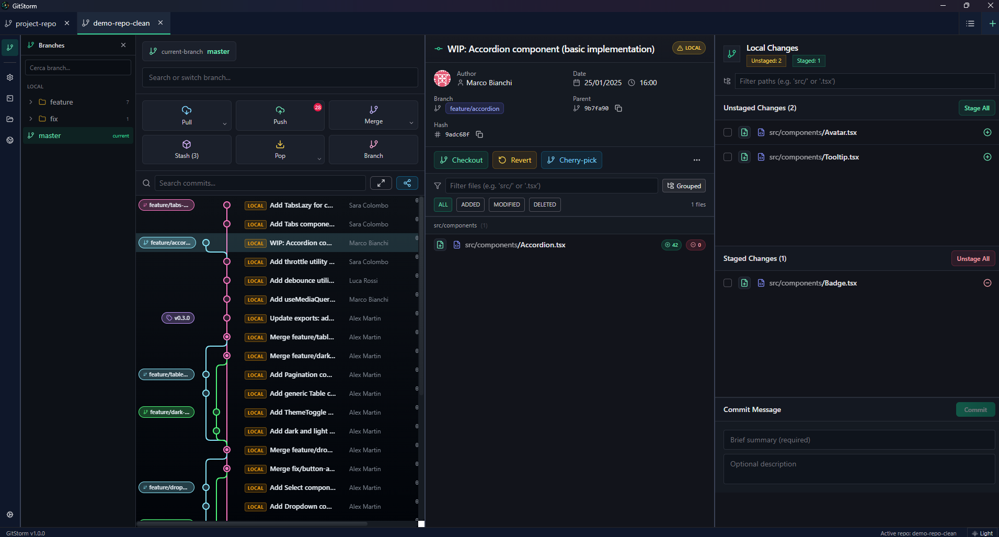
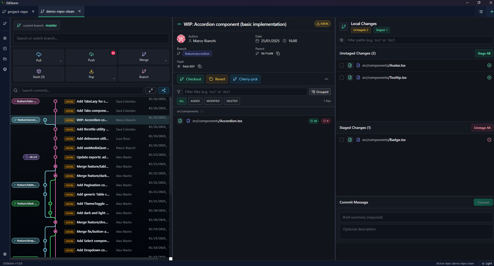
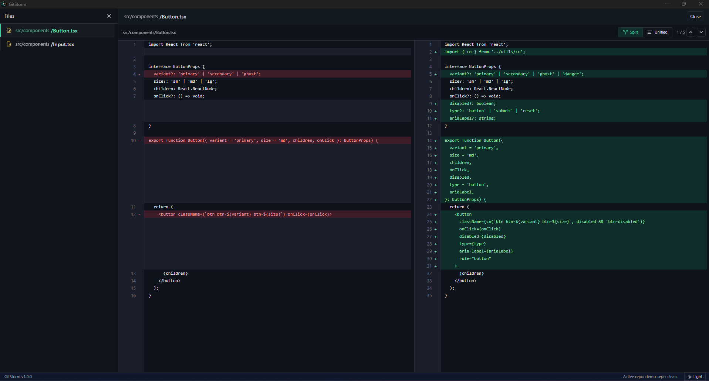
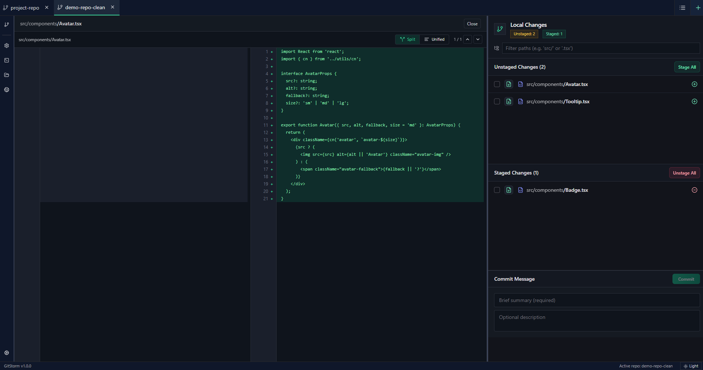
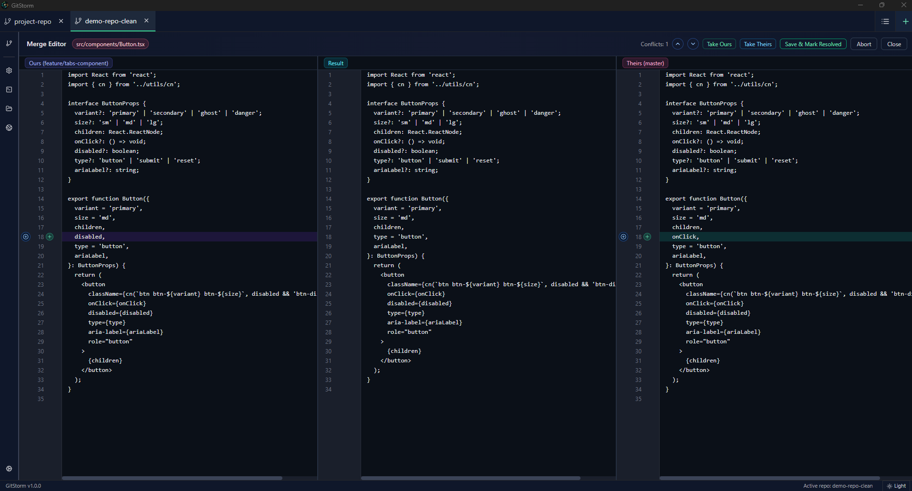

The desktop Git client that combines Rust-powered performance with a stunning visual interface. Commit graphs, smart diffs, merge resolution — all in one native app.
Free download · Windows x64 · macOS x64

Navigate complex branch topologies with an interactive commit graph. Color-coded branches, merge paths, and tag markers give you instant clarity.

Review code changes with a professional split-view diff. Syntax highlighting, hunk navigation, and inline annotations make code review effortless.

A three-panel layout keeps unstaged changes, staged files, and your commit message always visible. Preview diffs inline before committing.

A three-pane merge editor shows Ours, Result, and Theirs side by side. Accept changes with one click, or edit the result manually. No more terminal gymnastics.

A complete Git workflow in one beautiful, blazing-fast native app.
Interactive history with branch lines, merge nodes, and tags. Navigate your entire repo visually with a single scroll.
Built on Tauri v2 with a native Rust backend using git2. Batch operations and zero Electron overhead.
Split or unified diff viewer with syntax highlighting. Compare commits, branches, or local changes at a glance.
Three-way merge editor for conflict resolution. Visual merge and rebase workflows with one-click actions.
Create, rename, delete, and switch branches. Visual branch tree with upstream tracking and quick actions.
Stage individual files or everything at once. Inline diff preview before committing. Optimistic updates for instant feel.
Create annotated or lightweight tags. Right-click context menus in graph and list views for quick access.
Carefully crafted color palettes for both themes. Switch instantly from the toolbar.
Native desktop app for Windows and macOS. Small footprint, fast startup, no browser engine overhead.
Modern technologies chosen for performance, reliability, and developer experience.
Download GitStorm for free and experience Git like never before.